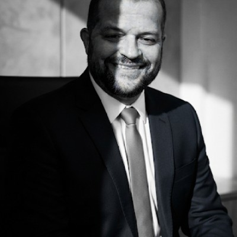

Claudio Silva de Souza | WDD130

Oi Pessoal! Sou o Claudio Silva de Souza e sou de Jundiaí, São Paulo, Brasil. Sou autista nível de suporte 1, gosto de séries e música. Estou me aventurando nesse mundo do Desenvolvimento de Softwares e estou gostando, espero me desenvolver cada vez mais Estou amanhando essa oportunidade de estudar pela BYU. Quero aprender cada vez e me desenvolver nessa área tão maravilhosa. .